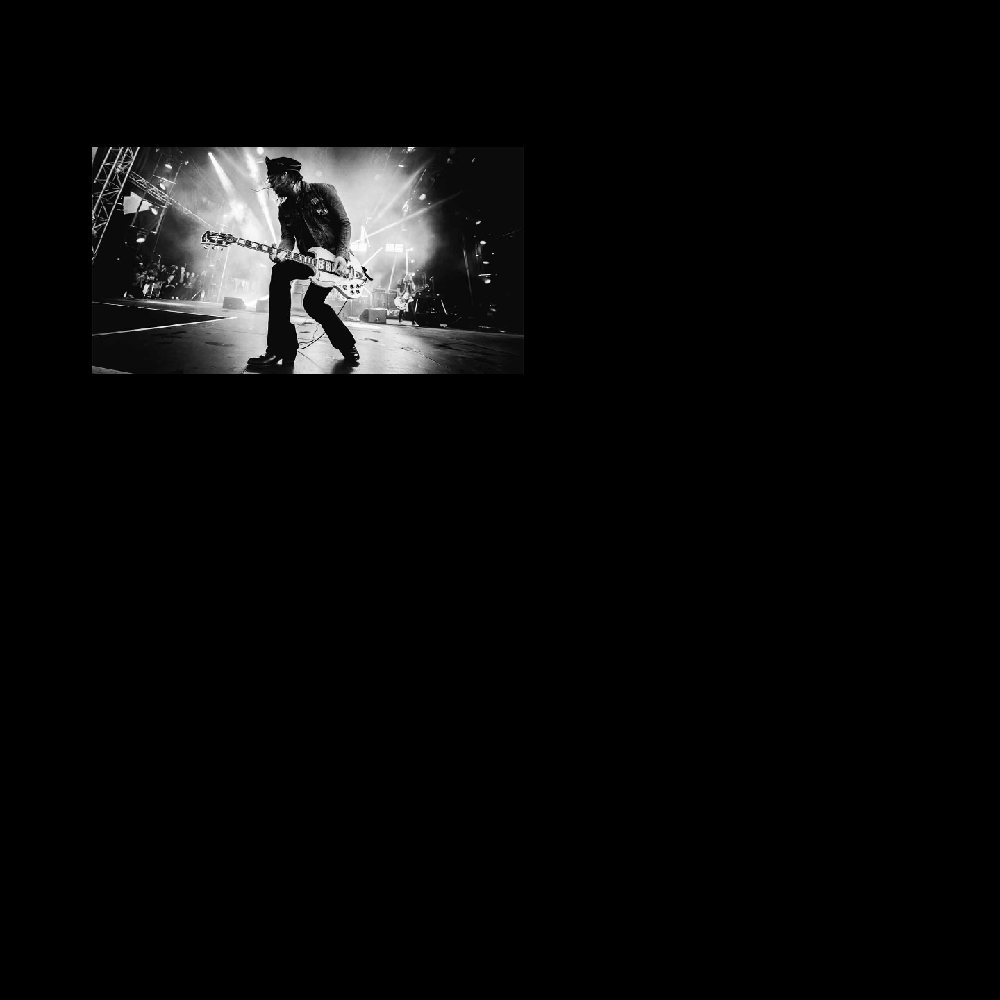

About
Dauphines Revival came together in 2016. The lead singer Edward Cerny, gathered other members from finding other dying bands. Once they assembled, Dauphines Revival too the world by storm with their first hit album SONS which was the fastest selling rock album of all time. Through the following years they dropped hit albums such as Mask and Redwood original which revieved critical praise. Their latest album Mr Mayham, won a grammy for best rock album. Dauphines Revival continues to reach the hearts of many rock fans to this day.